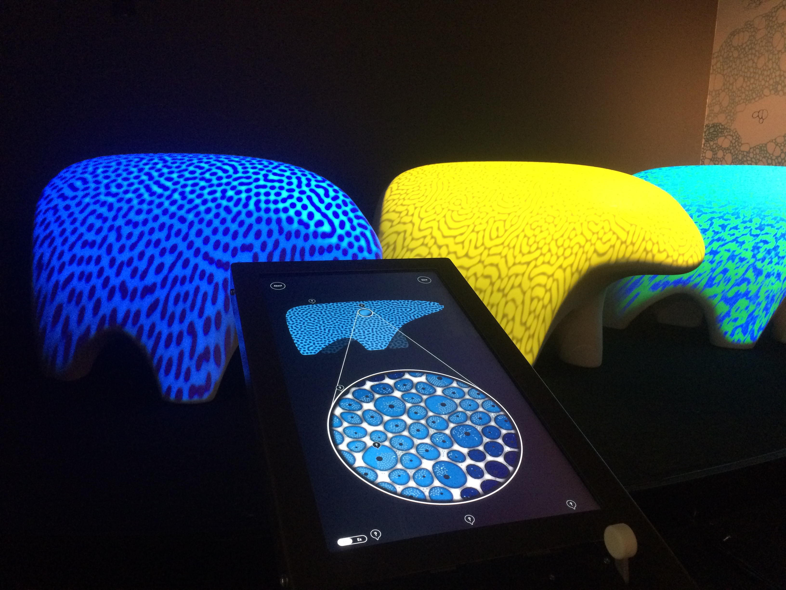
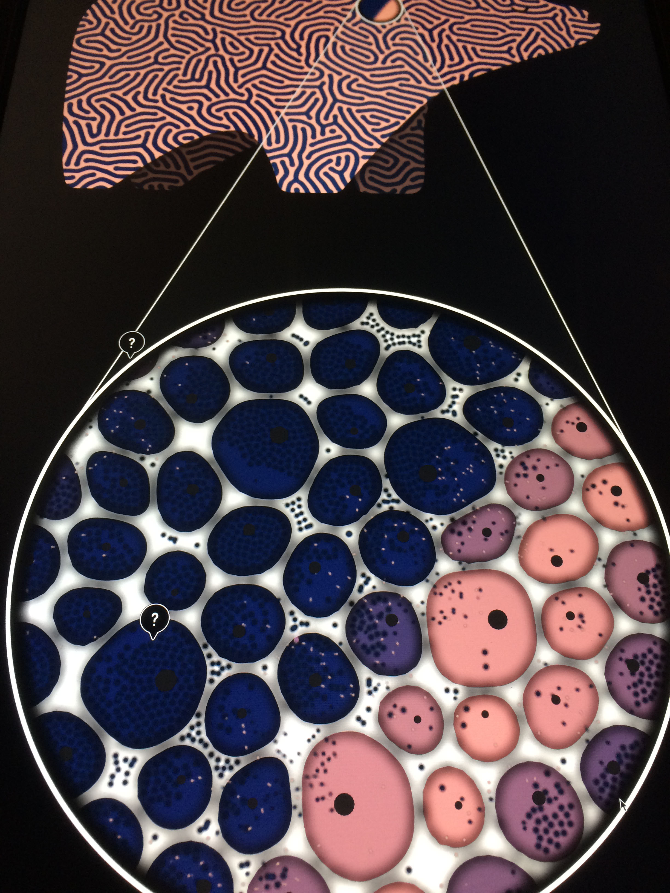

|
Biology has become a powerful and revolutionary technology in today’s world, uniquely poised to transform and propel innovation in the near future. BioDesign Studio is an interactive exhibit that spark imagination and confidence with the burgeoning fields of synthetic biology, bioengineering, biological design and DIY biology. |
|
My role in this project was to develop two interactive experiences. One is Pattern Design, explaining the concept of emergence in the context of biology, and in particular in coat patterns formation. The other is BioPool which I co-developed with Oriol Ferrer Mesià. In this experience visitors create new (virtual) life forms by assembling "DNA blocks", in the same way scientists do today. In Pattern Design, visitors create new coat patterns by tweaking Reaction-Diffusion algorithms. The resulting patterns are projected onto bear sculptures. In addition, the simulation is presented in the micro-level, showing how the reaction and diffusion is happening in the cells. Visitors can save their creation online and learn more about the role of emergence in biology. This is the microscopic view of the interface where visitors can see and learn about the micro elements that control the process. |
In collabortion with
|